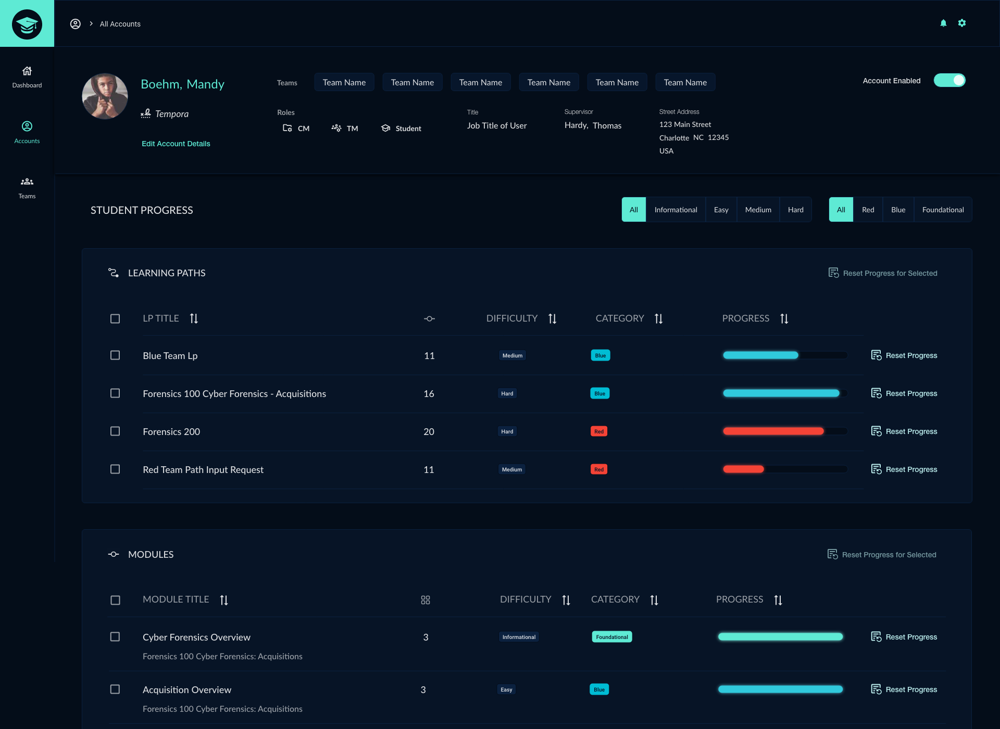
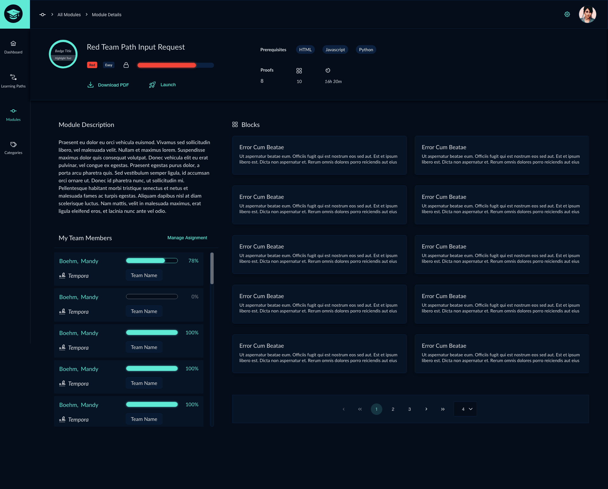
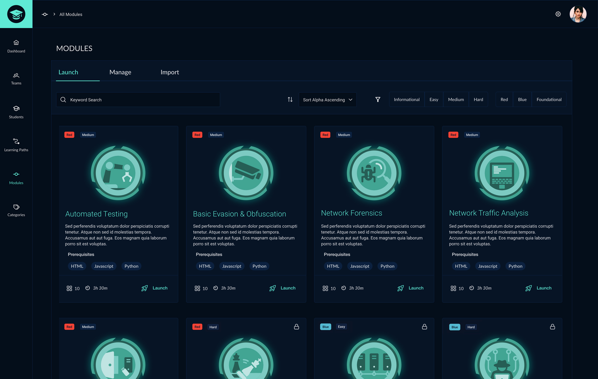
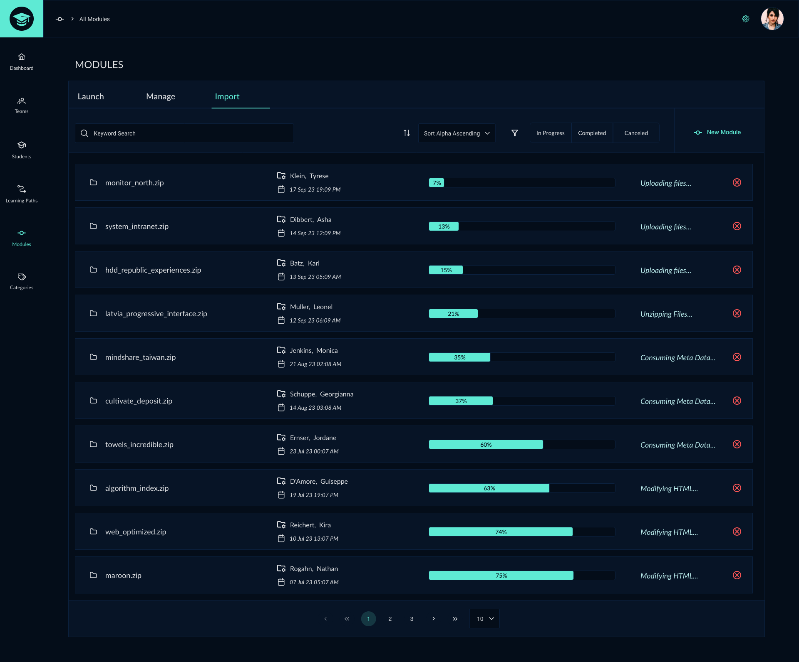
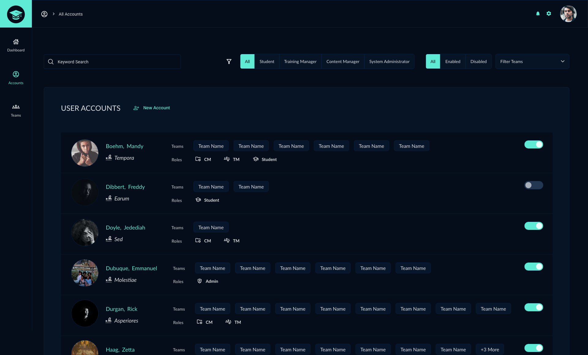
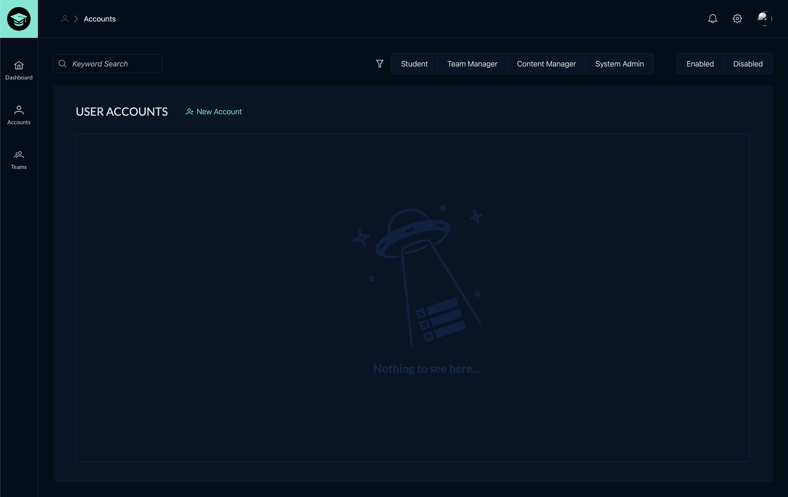
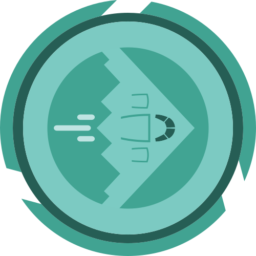
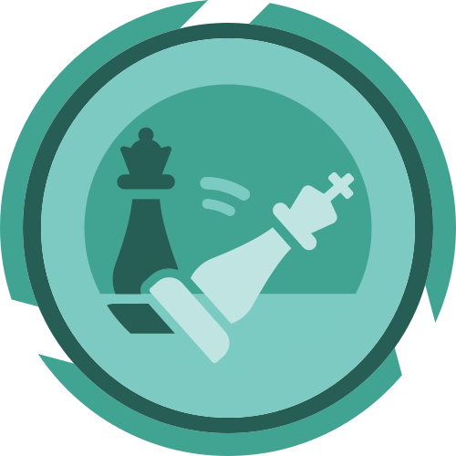

The CyberGrad software application was created to train users on the basics of cybersecurity through interactive lessons and quizzes. Our team considered using a pre-built Learning Management System to complete the project but instead opted to create a custom content management application. My responsibilities for the CyberGrad project included:






The study of the tactics, techniques, and procedures used by cyber adversaries to exploit or compromise computer systems, networks and info
Discovery and retreival of info surrounding a cyber attack including recording events and finding the source of an attack

Preliminary scanning phase of a cyber attack to gather info about potential vulnerabilities that can be exploited

Learning the different available paths for gaining access to the target network environment